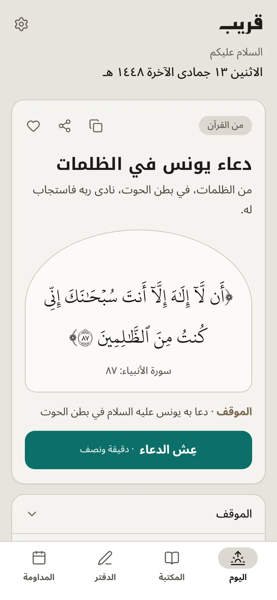
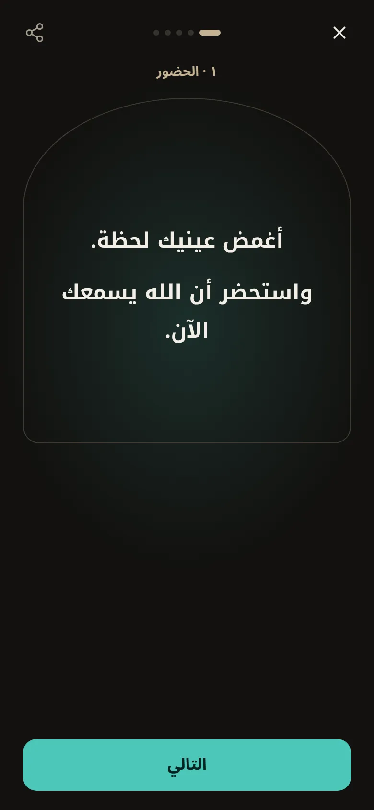

دعاءٌ واحد كلَّ يوم
من القرآن والسنة، مع الموقف الذي قيل فيه، ومعناه، ووقفات قصيرة. ثم دقيقة ونصف تعيش فيها الدعاء قبل أن تدعو به.
ابدأ بدعاء اليوممجاني، بلا حساب، ويعمل بلا إنترنت بعد أول زيارة.

لكلّ دعاءٍ قصة
خلف كل دعاء في القرآن والسنة إنسانٌ في لحظة حقيقية: نبيٌّ في ضيق، وأمٌّ في مصيبة، وصحابيٌّ يسأل: علّمني ما أقول. حين تعرف الموقف يصير الدعاء دعاءك أنت.

عِش الدعاء
خمس خطوات قصيرة، يظهر نصها جملةً جملة، ويمكنك أن تُظهره كاملًا متى شئت.
- الحضور تتوقف لحظة قبل أن تكلّم الله.
- الموقف كما ورد في مصدره، بلا تفاصيل مخترعة.
- المعنى ما الذي تطلبه بالضبط.
- حاجتك تربط الدعاء بيومك.
- الدعاء تدعو به الآن، والنص أمامك.
وعودنا، كما هي
دعاءٌ واحد كلَّ يوم
نفسه لكل الناس في التاريخ نفسه، ويتغير عند منتصف الليل بتوقيتك.
بلا سلاسل، بلا نقاط، بلا مقارنة
لا شيء تربحه أو تخسره. إن فاتك يوم فاليوم التالي ينتظرك.
ما تكتبه لا يغادر جهازك
الدفتر و«دعواتي» على جهازك وحده. لا حساب، ولا خادم يقرأ.
نصوص منسوخة من مصادرها
الآية من نص مجمع الملك فهد بخط مصحف المدينة، والحديث من صحيحي البخاري ومسلم. طابقنا كل نص مع مصدره، والمراجعة العلمية جارية.